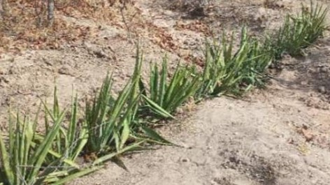

Vegetative Control Methods
Description
Vegetation lines of grasses, shrubs or trees planted across the slope on the contour act as natural barriers to control erosion. Vegetation lines consisting of sisal, aloe, or vetiver grass will slow down runoff water, trap sediment, stabilize soil and prevent the loss of topsoil. Sisal and aloes are easily established and are drought resilient, while vetiver grass effectively controls erosion, stabilizes slopes and improves water management. Vegetation lines are established by placing plants 100 to 150 mm apart on a 150 to 200 metre line. For slopes steeper than 10%, the vegetation lines should be 5 metres apart from each other. This approach effectively controls erosion and promotes sustainable land management practices
Site Selection:
Identify areas where erosion is a problem and where vegetation can be established, typically a site with a gentle slope
Design:
Determine the length, width, and spacing of the vegetative barriers based on the slope, soil type, and rainfall intensity